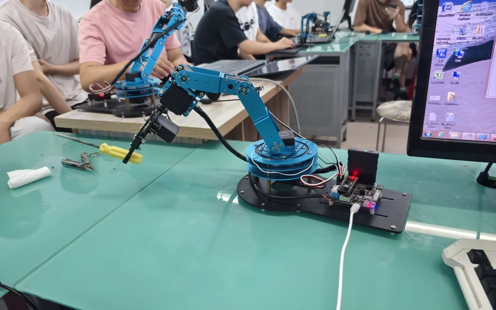
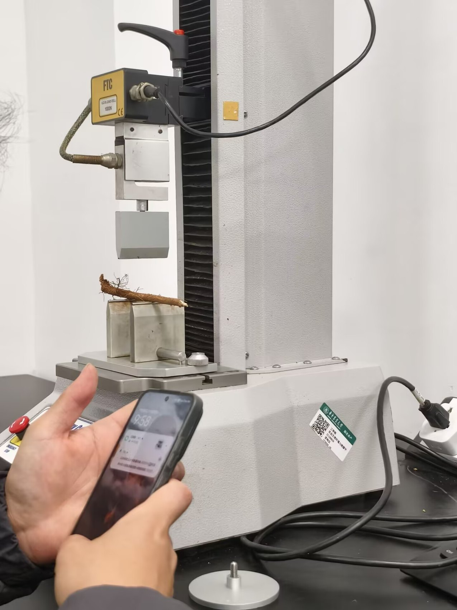
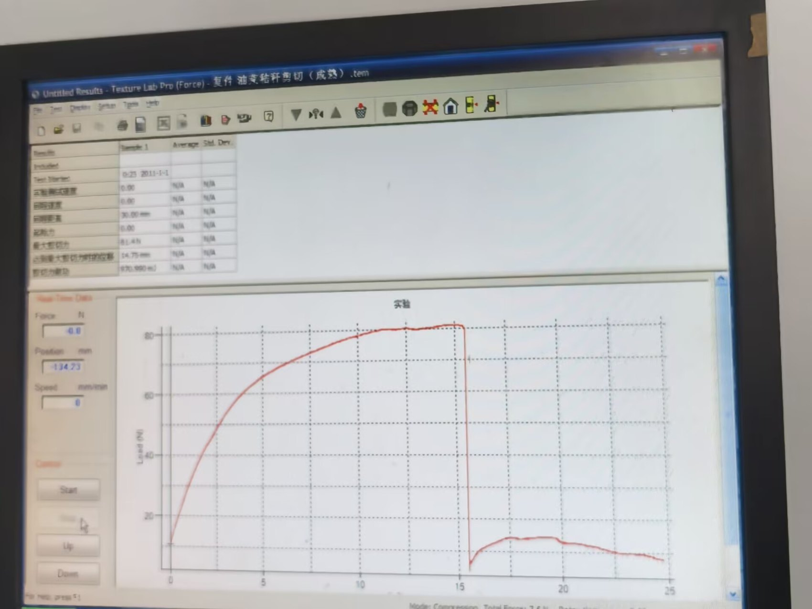
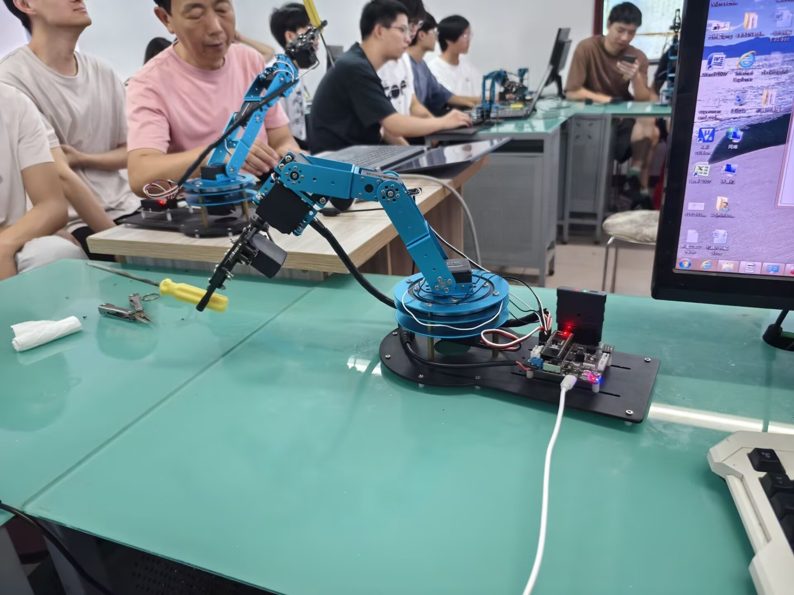
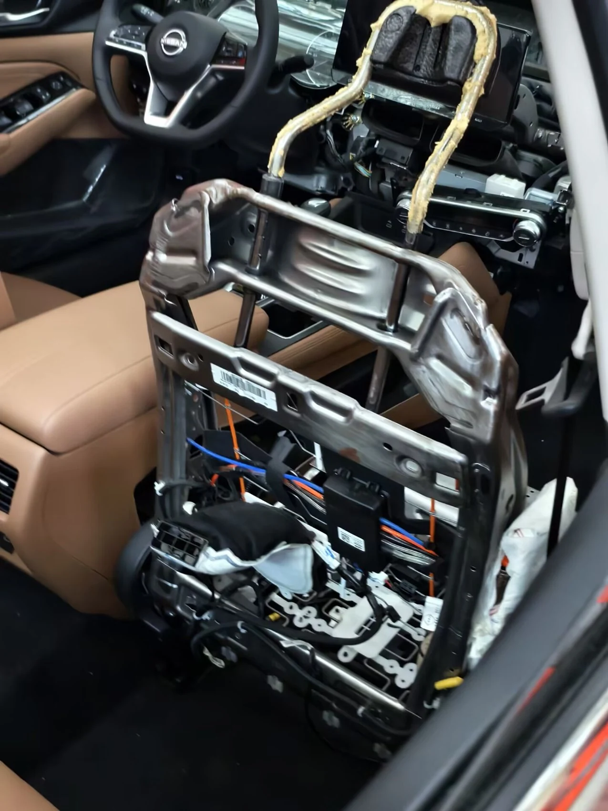
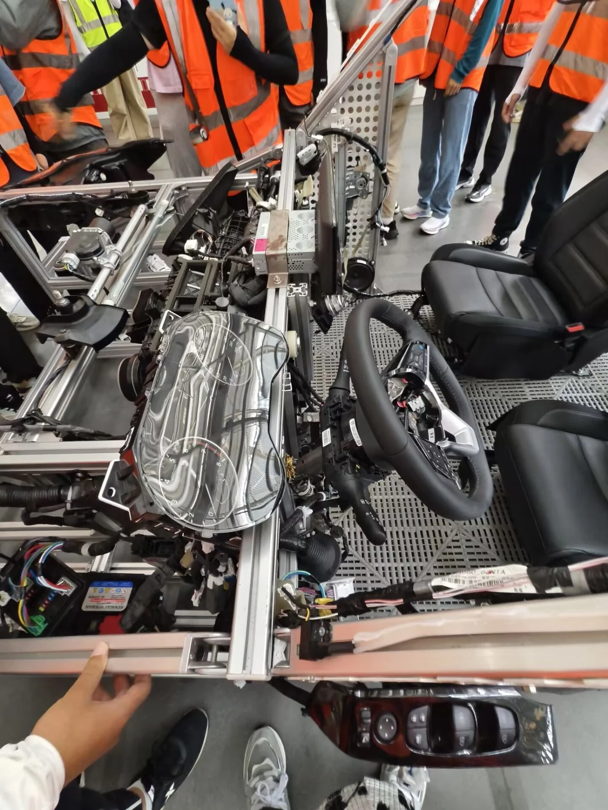

Huazhong Agricultural University (undergraduate) · Lab, robotics and automotive training
Engineering Practice & Automotive Structure Training
Undergraduate practical training at Huazhong Agricultural University in three areas: mechanics testing with force-displacement results, desktop robotic-arm control, and an automotive structure training visit.
My role: Trainee. I practised mechanics testing and robotic-arm control, and on the automotive visit I helped explain vehicle interior and structural systems to a small group of fellow students.

TestingForce-displacement results from mechanics testing equipment
RoboticsDesktop robotic-arm control with actuator and controller hardware
AutomotiveSeat, frame, trim, wiring and steering-area structure
ExplainingHelped explain vehicle systems to a small student group
What I took from it
- Comfort around physical test equipment, not only CAD and simulation tools.
- Linking a test setup, the measured response and the engineering interpretation.
- Hands-on mechatronics: robotic-arm control and basic hardware interaction.
- Automotive structure awareness: seats, trim, wiring, steering area, interior support structures and assembly logic.
- Explaining technical features face to face to a small group, not only in written reports.
Photos from the training





Want to know more?
See also my university workshop training in laser cutting, CNC and 3D printing.